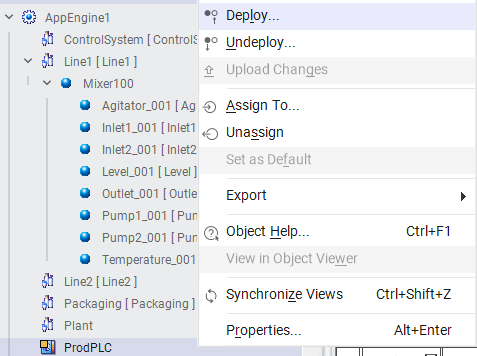
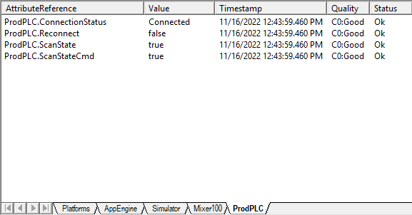
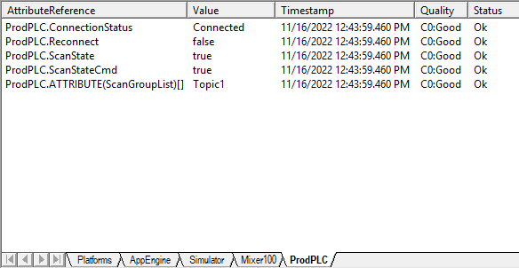

Source: AVEVA Application Server 2023 Training Manual, Module 5, Lab 10 (pages 5-19 to 5-26)
Understanding and configuring the Device Integration Object — the bridge between your Galaxy and field devices.
Reference: Module 5, Lab 10 (pages 5-19 to 5-20)
When you connected to an OI Server in Lab 9, Application Server automatically created a special object in your Galaxy to represent that connection. This is the Device Integration (DI) Object.
In your TrainingGalaxy, the DI Object is called ProdPLC. It represents the connection to your Production PLC through the OI Server. Every attribute in your Galaxy that is bound to a PLC tag flows through this DI Object.
| Characteristic | Description |
|---|---|
| Auto-created | Generated automatically when the Galaxy connects to an OI Server — you do not create it manually |
| System-managed | Contains system-level attributes that monitor and control the OI Server connection |
| Hierarchical | Organized under the Galaxy in the IO Devices view, with topics and tags nested below it |
| Deployable | Must be deployed to the runtime engine before any I/O binding will work |
Reference: Module 5, Lab 10 (pages 5-19 to 5-20)
Understanding the deployment context menu is essential for managing your DI Object and the objects that depend on it. When you right-click an object in the deployment tree, you get a context menu with key operations:

| Option | What It Does |
|---|---|
| Deploy | Pushes the object to the runtime engine. The object begins executing, communicating with the OI Server, and processing data. |
| Undeploy | Removes the object from the runtime engine. It returns to development-only status and stops all data communication. |
| Assign To | Changes which deployment node (e.g., which $WinPlatform or AppEngine) the object runs on. Useful for restructuring your deployment topology. |
| Export | Exports the object and its configuration for use in another Galaxy or for backup purposes. |
| Properties | Opens the object's properties dialog where you can configure deployment-specific settings such as which nodes to deploy to and deployment priorities. |
Quality = Bad or Quality = Uncertain. Always ensure the DI Object and its OI Server are deployed and connected before binding attributes to I/O.
Reference: Module 5, Lab 10 (pages 5-20 to 5-22)
The DI Object contains several critical system attributes that let you monitor and control the connection to the OI Server. Let's examine the ProdPLC DI Object's key attributes:

| Attribute | Value in Screenshot | What It Means |
|---|---|---|
| ConnectionStatus | Connected |
Indicates the current state of the connection to the OI Server. Common values: Connected, Disconnected, Connecting, Faulted. When Connected, the OI Server is actively communicating with the field devices. |
| Reconnect | false |
Controls automatic reconnection behavior. When false, Application Server will NOT automatically attempt to reconnect if the OI Server connection drops. When true, it will automatically retry the connection. In production, you typically want this set to true. |
| ScanState | true |
Controls whether the OI Server actively polls the field devices. When true, data is being collected at the configured scan rate. When false, polling stops — useful for maintenance or troubleshooting without disconnecting entirely. |
| Topic1.$Sys$Status | true |
A system-level attribute specific to Topic1. It indicates whether the topic is healthy and communicating. true means the topic is operational and data is flowing. |
$Sys$ are system-level attributes that Application Server uses internally for monitoring. They are read-only and provide real-time diagnostic information about the communication health. You cannot write to them — they are populated automatically by the runtime engine.
| Status | Meaning | Action Required |
|---|---|---|
Connected |
Normal operation — OI Server is communicating with field devices | None — system is healthy |
Disconnected |
Connection lost — OI Server is not reachable | Check network, OI Server service, and deployment status |
Connecting |
Attempting to establish connection | Wait — connection attempt in progress |
Faulted |
Connection failed due to configuration error | Review OI Server configuration and topic settings |
Reference: Module 5, Lab 10 (pages 5-21 to 5-23)
Once your DI Object is deployed and connected, you can monitor its attributes in real time. This is essential for verifying that communication is healthy and for diagnosing issues.

When you monitor DI Object attributes in the Object Viewer or the Galaxy IDE, each attribute displays three pieces of information:
| Field | Description |
|---|---|
| Value | The current attribute value (e.g., Connected, true) |
| Timestamp | When the value was last updated — critical for determining if data is fresh or stale |
| Quality | A code indicating data reliability. C0:Good means the value is fresh and trustworthy. |
| Quality Code | Meaning | Typical Cause |
|---|---|---|
C0:Good |
Data is fresh and reliable | Normal operation — OI Server is polling and returning valid data |
00:Bad |
Data is unreliable or unavailable | OI Server disconnected, PLC offline, or communication timeout |
40:Uncertain |
Data may or may not be valid | Intermittent communication issues or the last known value may be stale |
80:Good, Local Override |
Value has been manually overridden locally | Someone used the Modify Value dialog to force a value |
C0:Good to 00:Bad, you'll know immediately that a communication issue has occurred. This is far better than discovering the problem hours later when an operator reports that the HMI is showing stale data.
Reference: Module 5, Lab 10 (pages 5-22 to 5-24)
While most DI Object attributes are system-managed, there are several properties you can and should configure for your specific application needs:
The ScanState attribute controls whether the OI Server polls the field devices. This is one of the most useful operational tools:
false pauses polling but keeps the OI Server connection alive. Disconnecting the OI Server tears down the entire communication link. Use ScanState for temporary pauses; use disconnect for major maintenance.
The Reconnect attribute determines automatic recovery behavior:
| Reconnect Value | Behavior | When to Use |
|---|---|---|
true |
Application Server automatically retries the connection if it drops | Production environments — you want automatic recovery without operator intervention |
false |
No automatic retry — you must manually re-enable the connection | Development/testing environments, or when you want controlled reconnection |
Each topic under the DI Object also has system attributes:
| Attribute | Purpose |
|---|---|
Topic1.$Sys$Status |
Indicates if the topic is healthy (true) or faulted (false) |
Topic1.$Sys$LastError |
Contains the last error message if the topic encountered a problem |
Topic1.$Sys$ScanRate |
The configured polling rate for this topic (in milliseconds) |
Topic1.$Sys$Status shows false, check: (1) Is the OI Server running? (2) Is the topic configured in the OI Server? (3) Is the network path to the PLC valid? (4) Is the DI Object deployed? The $Sys$ attributes are your first line of diagnostic defense.
Reference: Module 5, Lab 10 (pages 5-19 to 5-26)
Objective: Configure and verify the DI Object (ProdPLC) to ensure reliable communication between your Galaxy and the field devices through the OI Server.
Prerequisites: Lab 9 completed — OI Server is running, Galaxy is connected, and the ProdPLC DI Object exists in your Galaxy.
Connected. If it shows Disconnected or Faulted, troubleshoot the OI Server connection.true, indicating active polling.true.true, indicating the topic is healthy.false, check the OI Server configuration and verify the PLC is accessible.C0:Good for all attributes — this confirms data is fresh and reliable.true to false.true. Verify that tag values resume updating.Disconnected.Disconnected.Connected.Record the following observations from this lab:
| Attribute | Expected Value | Actual Value | Notes |
|---|---|---|---|
| ConnectionStatus | Connected | ||
| ScanState | true | ||
| Reconnect | true | ||
| Topic1.$Sys$Status | true | ||
| Quality | C0:Good |
| Term | Definition |
|---|---|
| DI Object | Device Integration Object — a system object in the Galaxy that represents a connection to an OI Server |
| ConnectionStatus | A system attribute indicating the current state of the OI Server connection (Connected, Disconnected, Connecting, Faulted) |
| ScanState | A controllable attribute that starts (true) or pauses (false) OI Server polling of field devices |
| Reconnect | A controllable attribute that enables (true) or disables (false) automatic reconnection after a connection loss |
| $Sys$ Attributes | System-level read-only attributes prefixed with $Sys$ that provide real-time diagnostic information |
| Quality Code | A code indicating data reliability: C0:Good (reliable), 00:Bad (unreliable), 40:Uncertain (may be stale) |
| Topic | A communication channel within an OI Server configured to talk to a specific PLC or device |
| Deployment Chain | The dependency chain: automation objects depend on deployment nodes, which depend on $WinPlatforms, which depend on Bootstrap services |
What is a DI Object and how is it created?
A DI Object (Device Integration Object) is a special system object in the Galaxy that represents a connection to an OI Server. It is automatically created when the Galaxy connects to an OI Server — you do not create it manually. In your TrainingGalaxy, the DI Object is called ProdPLC.
What does the ConnectionStatus attribute indicate, and what value do you want to see during normal operation?
The ConnectionStatus attribute indicates the current state of the connection between Application Server and the OI Server. During normal operation, you want to see Connected. Other values include Disconnected, Connecting, and Faulted — all of which indicate a problem that needs attention.
What is the difference between setting ScanState = false and disconnecting the OI Server?
ScanState = false pauses all polling of field devices but keeps the OI Server connection alive. Tag values freeze at their last known values. Disconnecting the OI Server tears down the entire communication link. Use ScanState for temporary pauses (maintenance, testing); use disconnect for major maintenance or shutdown.
What does a Quality value of C0:Good mean, and what should you do if you see 00:Bad instead?
C0:Good means the data is fresh and reliable — the OI Server is actively polling and returning valid data. If you see 00:Bad, it means the data is unreliable or unavailable, typically because the OI Server is disconnected, the PLC is offline, or there is a communication timeout. Troubleshoot by checking: OI Server status, network connectivity, PLC availability, and deployment status.
In a production environment, what should the Reconnect attribute be set to, and why?
In production, Reconnect should be set to true. This ensures that if the OI Server connection drops (due to a network glitch, OI Server restart, etc.), Application Server will automatically attempt to re-establish the connection without requiring manual operator intervention. Without automatic reconnection, a temporary disruption could leave the system in a disconnected state indefinitely until someone notices and manually intervenes.